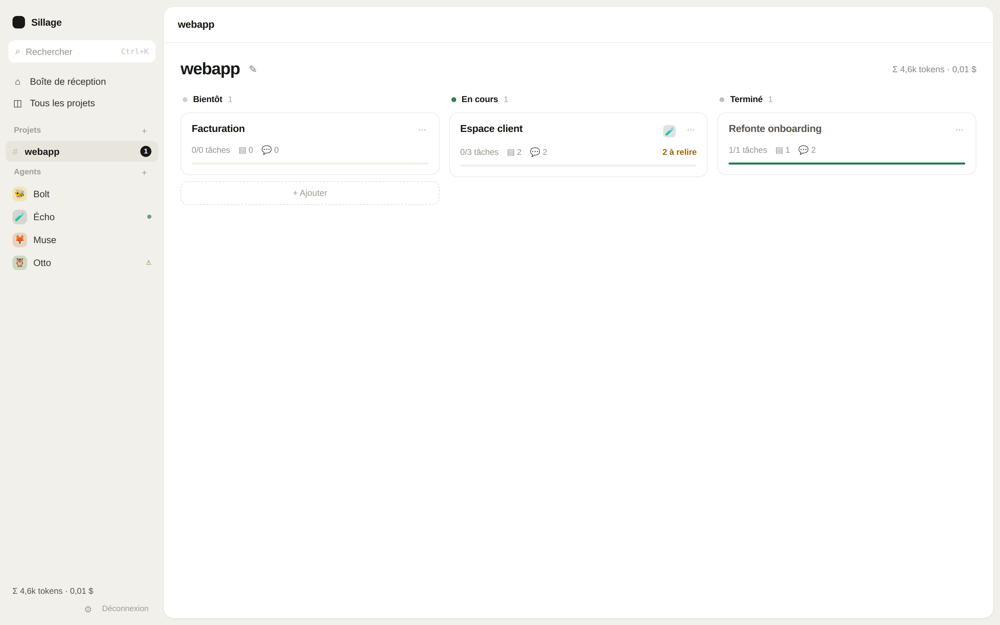
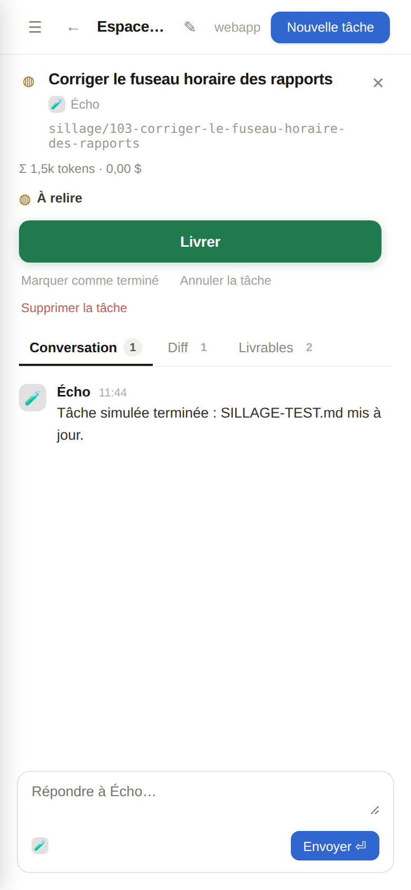
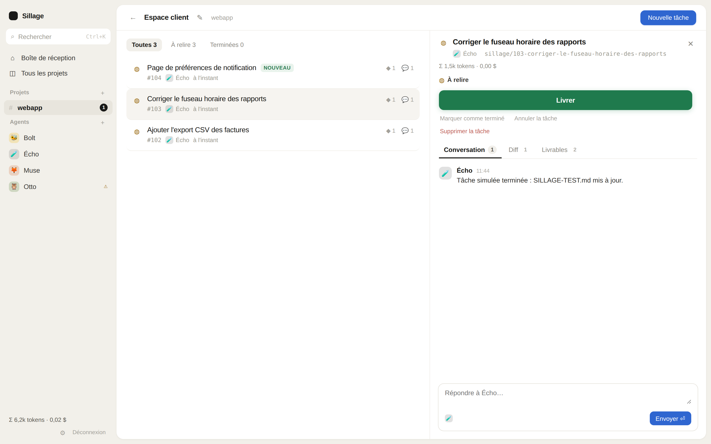

Run your AI agents without carrying them
Stop switching windows. Stop remembering which agent was doing what, on which branch, and what still needs a look. You drive your AI the way you drive a project: one board, one glance, one decision. Built by devs, for devs, to free up headspace.
- Open source, MIT
- Total control, always yours
Nothing to install
One file, that's allSillage is a single self-contained binary. Download it, run it. Nothing else to set up.
- No runtime, no dependencies
- No background service, no system changes
- Uninstall = delete the file

Everything stays visible
Agents propose, you decide. Nothing is hidden, nothing ships silently.
Workstreams & layered context
Group related tasks into workstreams that carry their own context, so agents stay on track across an entire feature, not just one prompt.
Human validation, structural
Review is not a suggestion bolted on top: it is a required step baked into the workflow, before anything reaches your codebase.
Token accounting
See exactly what each task, agent and project costs, in real time, without digging through provider dashboards.
Git-backed workspace
Every task runs in its own isolated git worktree. Your working copy stays clean, and nothing collides.
Works from your phone
Review a diff, ship a task, or check on an agent from anywhere. The dashboard is fully responsive.

Free built-in agent to try
Get started right away with a built-in agent, no API key required, then bring your own when you are ready.
How it works
Delegate a task
Describe what you need. The agent works in its own isolated worktree, no risk to your working copy.
Review the diff
Read the change, the conversation and the token cost, all in one place, before deciding anything.
Ship it
One confirmed click merges the work. Nothing leaves the worktree without that click.

Agents can never push. Git push exists in exactly one place, behind your click.
Agents propose changes inside their isolated worktree. Only your explicit, confirmed action can ship a change to a real branch. There is no other path.